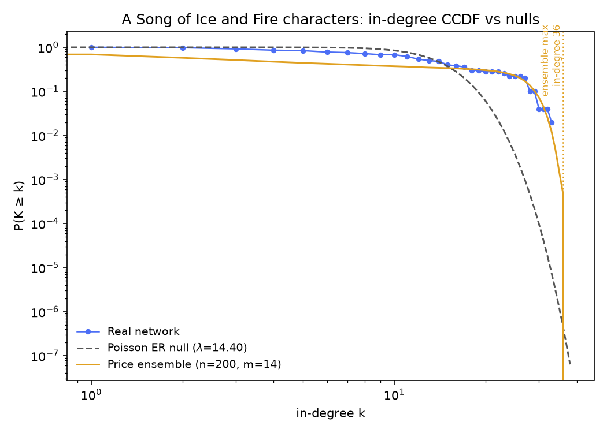
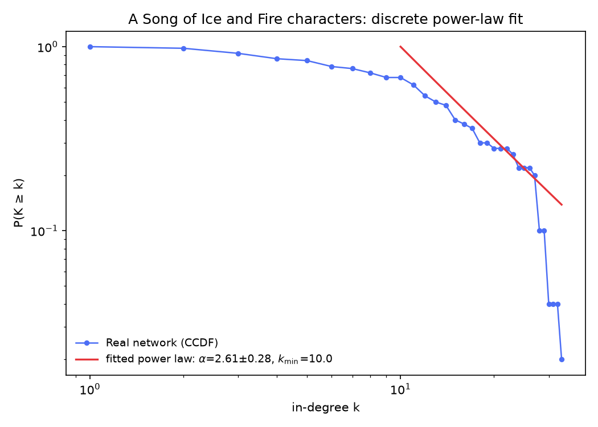

Is Tyrion an accident?
The same four tests on 50 A Song of Ice and Fire characters — where the hub survives the random draws, the shuffle explains the clustering away, and almost every citation runs both ways.
The same four tests on 50 A Song of Ice and Fire characters — where the hub survives the random draws, the shuffle explains the clustering away, and almost every citation runs both ways.
Third dataset, same four tests. This one is the 50 pages reachable in Wikipedia's Category: A Song of Ice and Fire characters (redirects resolved; crawled 2026-09-10), with 720 directed edges between them — an edge A→B when B's article appears on A's. Structurally it sits between the Silmarillion's 21 nodes and the Marvel snapshot's 303: no isolates, a single weakly connected component of all 50 nodes, and balanced degree roles with a twist (mean in-degree = mean out-degree = 14.4, but the ranges differ: 1–33 in, 0–27 out — someone cites widely without being cited at all).
The hub race looks nothing like Marvel's one-character blowout. Tyrion Lannister tops the count with 33 citations, but Daenerys is right behind at 32, and Cersei, Joffrey and Robert Baratheon all sit at 29. Five characters within four in-links of each other — that's not a dynasty, that's a tournament. Is 33 distinctive at all? Same order as always: chance, degree-preserving chance, growth, and the individual level.
Erdős–Rényi again: the same 50 nodes and 720 edges, placed by independent coin-flips. Across 300 offline draws, the biggest hub's in-degree ranged 19–27 (mean 21.8, sd 1.6). Tyrion's 33 is above every single draw — about 7 standard deviations above the random mean — and roughly 23% higher than the most extreme draw of 300.
Interesting subtlety: Daenerys's 32 would also top any draw, and even Cersei's/Joffrey's/Robert's 29 clears the ceiling by 2. So the chance question doesn't single out one leading suspect here the way the Silmarillion's single-hub race did — it indicts a whole leading tier. Draw your own below and judge.
Each draw independently places 720 directed edges among 50 nodes at random (no self-loops, no repeats) and plots the resulting in-degree CCDF against the real network's.
Same degree-preserving directed shuffle as everywhere else: chains a→b, b→c, c→d rewired to a→c, c→b, b→d, so every character keeps exactly their real in- and out-degree. Same two statistics, on the undirected projection (an edge if either article links to the other; 454 undirected edges here):
Offline, 300 shuffle realizations (3,000 swaps each). Clustering's null mean was 0.6711 (sd 0.0153); the real value sits at z ≈ −1.68, p ≈ 0.95 — like every other dataset so far, the degree sequence alone carries the triangles, and here there's even a margin of slack. Whatever produces Westeros's dense click-conflict clusters (the Baratheons and Lannisters all link each other; the Martells barely cite the North), holding link counts fixed and re-dealing them reproduces it entirely.
Reciprocity is where this dataset's character actually lives, and it's the strongest whole-network signature we've measured: null mean 0.4442 (sd 0.0176) against real 0.7389 — z ≈ 16.7, beyond every one of the 300 shuffles (p ≈ 0, like the Silmarillion's and Marvel's shuffle result). Three quarters of all ASOIAF citations run both ways. A shuffle that keeps every character's link count but knows nothing of alliances or grudges produces barely half that much two-way traffic. Some of that reciprocity is undirected projection anyway — but whatever the definition, the mutual-citation rate on this dataset is the real structural bond.
Run the same test yourself: pick a statistic, run some shuffles, and watch the null build up.
Each shuffle is a fresh copy of the real network, degree-preserving-swapped from scratch — not a running chain — matching how the offline reference numbers above were produced (with fewer swaps per realization here, for responsiveness).
And as with every dataset so far, one property this shuffle can't probe at all: the component partition. In every one of the 300 realizations the giant component stayed exactly 50 nodes — sd 0 — because a swap rewires only along an existing chain a→b→c→d and such a chain can never cross between weakly connected components. With exactly one component in the real network, that invariance carries no information here; it's a property of the method, not a discovery about Westeros. Hence no histogram above for it.
Directed preferential attachment, Price model, same as ever: each new node joins with m outgoing links, target picked with probability proportional to current in-degree; out-degree is exactly m; in-degree accumulates by preference. With a mean out-degree of 14.4, we ran trials at m = 13, 14 and 15 (50 each).
Where Marvel's matching model reliably overshot Spider-Man and the Silmarillion's m choices barely bracketed Morgoth, Westeros is the Goldilocks case: Price(m=13) trials reached max in-degree 29–36 (mean 32.5), Price(m=14) 30–36 (mean 32.4), Price(m=15) 29–35 (mean 31.6) — the real Tyrion hub of 33 sits dead-center in the model's spread at every m tried. Unlike Marvel's overshoot, the growth-plus-preference mechanism here matches both the network's density and its hub size without tuning — a generative hypothesis this data is consistent with, not proof that Wikipedia growth actually behaves this way (we still have no timestamps, so no growth test is possible).
Move the slider and regenerate to see for yourself.
Grows a fresh directed preferential-attachment network to n=50 nodes with the chosen m, then plots its in-degree CCDF against the real network's.
Preferential attachment depends on history: characters arrive one at a time, and each newcomer is more likely to connect to whoever's already popular, so an early lead can snowball into a hub like Tyrion. But what if Westeros was born all at once?
If all 50 characters existed simultaneously, there'd be no established popularity for a newcomer to follow — everyone would start with the same shot at new connections. That's the counterfactual below: a second model, the same 50 characters and roughly the same edge budget (m = 14 wires about 700 edges against the real 720), that links nodes uniformly at random instead of preferring the well-connected. It's not a claim about how the ASOIAF article network actually came to exist — it's a way of asking how much of Tyrion's hub could come from history alone.
Sequential growth adds one character at a time, wiring each newcomer's m links proportional to how connected existing characters already are (the same rule as above). Big Bang creates all 50 at once and wires the same m links per character uniformly at random — no regard for who's already connected. Switch models or click "New universe" for a fresh run; node size shows degree, and the largest hub is highlighted in gold. Hover a node (mouse only) for its name and degree.
Hover a node to see who occupies it and how connected it is in this run.
Run each model a few times at the same m. Big Bang spreads connections fairly evenly — across 200 offline runs its biggest hub ranged 18–27 (mean 21.5), right where the ER draws land, and most nodes end up a similar, modest size. Sequential growth at the same m lands higher and tighter (30–36, mean 32.4), exactly bracketing Tyrion's real 33. That's the mechanism in miniature: in a growing network, being popular early is itself an advantage that compounds — and in Westeros's dense, everyone-joins-connected world, that advantage compounds fast. In a universe born all at once, there's no "early" for it to attach to.
So the two stories — "Tyrion is what growth produces" and "Tyrion is an artifact of how the category is wired" — can't be fully separated here either, since the growth model fits without tuning. What this explorer isolates is what history specifically contributes: the same link budget, spent without preference, produces a hub barely two-thirds Tyrion's size.
Exact definitions, same as always: take the undirected projection (a link either way counts one connection). A character's degree is their number of distinct neighbors; their average neighbor degree is the mean degree of those neighbors. Network average ⟨k⟩ = 18.16 against the edge-weighted mean neighbor degree ⟨k²⟩⁄⟨k⟩ = 22.72 — 25% higher. Marvel's same gap was 133%; the Silmarillion's was 15%; Westeros's sits near the mild end, which is what you'd expect for a dense, closed world where no one is yet a hub of hubs (Tyrion, at 33 in-links, is only a third of Spider-Man's Marvel-leading 106).
Individually: 34 of 50 (68%) have neighbors on average better connected than they are; 16 (32%) hold their own; zero ties. Exactly one character's degree is greater than or equal to every neighbor's — and again it's the one you'd guess: Tyrion Lannister, as champion with undirected degree 34. (Marvel's version had two champions, the Silmarillion's one — Morgoth.)
Search for a character below to see their own numbers.
Each dot is one connected character (own degree vs. average neighbor degree, log-log). The dashed diagonal marks equality: above it, your neighbors out-rank you on average; below it, you out-rank them. Click a dot or search a name.
No character selected yet — click a dot or find one above.
The same closing protocol the Marvel page used, run on the ASOIAF crawl: the in-degree CCDF
P(K ≥ k) against two nulls — an ER random graph, whose in-degree
is exactly Poisson with λ = 720/50 = 14.4, and
a 200-seed ensemble of directed Price graphs (N = 50,
m = 14 — edge-matched), with the ensemble maximum marked. A discrete power-law fit
(Clauset–Shalizi–Newman MLE, via the powerlaw package) then summarizes the tail:
exponent α̂ with its standard error, and a self-selected cutoff k̂min.


Not demonstrably non-random at the top. At λ = 14.4 on 50 nodes, the Poisson null is broad enough that a Tyrion-sized hub is no freak: in-degree ≥ 33 is expected about 0.35 times per draw, and 15 characters clear in-degree 20 where 4.7 were expected. This is the densest dataset we've fitted, and density is exactly what keeps the Poisson null alive — the ER verdict from the first section (the leading tier above every draw's ceiling) reflects the joint extreme of five characters, not one lonely tail point.
Right on the Price ensemble. The 200-seed ensemble at m = 14 produced max in-degrees of 28–36 (mean 32.5): Tyrion's 33 sits dead-center, and the ensemble max (36) clears him by only three. On Marvel the real hub nearly doubled the ensemble max; here the model and the data are the same size — the cleanest hub-level agreement of the six datasets, matching the growth section's Goldilocks verdict.
Neither, strictly. The fit rests on 34 tail points (k ≥ 10), the standard error alone is ± 0.28, and a network this dense runs out of citers fast — nobody can be cited by more than 49 of 50. "Scale-free-looking tail" is as far as this data goes, and the tail it describes is short.
What we can't conclude (for this question):
Pulling the four sections together:
So: the five hubs of the tournament are not one statistic dressed as five. Tyrion is a mechanism-influenced hub (the growth story fits without tuning), while the mutual-citation rate is the only real relational structure left after the degree sequence accounts for the triangles. Week 2's lesson generalizes: null models don't just answer — they tell you which corner of a dataset's shape is worth looking at.
analysis/build_week2_reference.py asoiaf, run against the crawled data in
data/A_Song_of_Ice_and_Fire_characters/; it writes
data/A_Song_of_Ice_and_Fire_characters/asoiaf_week2_summary.json. The fit
section's figures and numbers come from analysis/build_week2_fit_reference.py asoiaf
(networkx + powerlaw + matplotlib in analysis/.venv), which appends the
fit key to the same JSON. Every interactive figure on this page recomputes its
own live version of the same algorithm in your browser — nothing here is hand-typed separately
from the code that produced it.